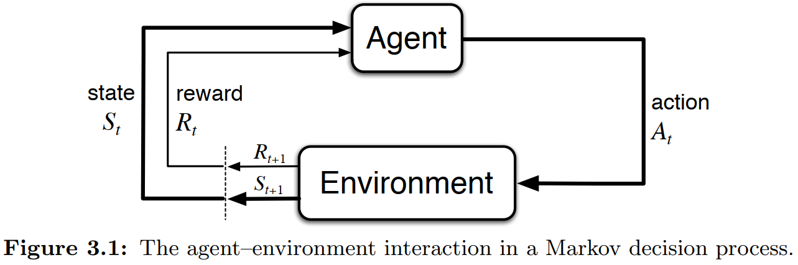

\[ \textbf{Markov Decision Process (MDP)} \]

\[ \Downarrow \]
\[ \textbf{Temporal-Difference TD(λ)} \]
\[ V_{\text{new}}(S_t) \leftarrow V_{\text{old}}(S_t) + \eta \cdot \left[ G_t^{\lambda} - V_{\text{old}}(S_t) \right] \] \[ G_t^{\lambda} = (1-\lambda)\sum_{n=1}^{T-t-1}\lambda^{n-1}G_{t:t+n} + \lambda^{T-t-1}G_t \]
\[ \Downarrow \]
\[ G_t^{\lambda} \xrightarrow{\lambda = 0} G_t^{0} = (1-0)\sum_{n=1}^{T-t-1}0^{n-1}G_{t:t+n} + 0^{T-t-1}G_t \]
\[ \Downarrow \]
\[ G_t^{0} = G_{t:t+1}= r_{t+1} + \gamma V_{\text{old}}(S_{t+1}) \]
\[ \Downarrow \]
\[ \textbf{Temporal-Difference TD(0)} \]
\[ V_{\text{new}}(S_t) \leftarrow V_{\text{old}}(S_t) + \eta \cdot \left[ r_{t+1} + \gamma V_{\text{old}}(S_{t+1}) - V_{\text{old}}(S_t) \right] \] \[ \Downarrow \]
\[ r_{t+1} + \gamma V_{\text{old}}(S_{t+1}) \quad \xrightarrow{\gamma = 0} \quad r_{t+1} \]
\[ \Downarrow \]
\[ \textbf{Rescorla-Wagner Model} \]
\[ V_{\text{new}}(S_t) \leftarrow V_{\text{old}}(S_t) + \eta \cdot \left[r_{t+1} - V_{\text{old}}(S_t) \right] \]
Utility Function (γ)
People’s subjective perception of objective rewards is more accurate. This is because the relationship between physical quantities and psychological quantities is not necessarily always a linear discount function; it could also be another type of power function relationship (Stevens’ Power Law).
\[ U(r) = r^{\gamma} \]
According to Kahneman’s Prospect Theory, individuals
exhibit distinct utility functions for gains and
losses. Referencing Nilsson et al. (2012), we have
implemented the model below. By replacing util_func with
the specified form that follows, you can enable the model to run a
utility function based on Kahneman’s Prospect
Theory.
\[ U(R) = \begin{cases} -\beta \cdot (-R)^{\gamma_{1}}, & \text{if } x \le 0 \\ R^{\gamma_{2}}, & \text{if } x > 0 \end{cases} \]
NOTE: Although both traditional reinforcement learning and my model utilize the symbol \(\gamma\), its interpretation differs. In traditional RL, \(\gamma\) serves as the discount rate for future rewards. In contrast, within this package, \(\gamma\) functions as a parameter in the utility function.
Learning Rates (η)
This parameter \(\eta\) controls how quickly an agent updates its value estimates based on new information. The closer the learning rate is to 1, the more aggressively the value is updated, giving greater credence to the immediate reward rather than previously learned value.
\[ \eta(p) = \begin{cases} \eta, & |\mathbf{p}| = 1 \quad \text{(TD)} \\ \eta_{-}; \eta_{+}, & |\mathbf{p}| = 2 \quad \text{(RDTD)} \end{cases} \]
NOTE: When there’s only one \(\eta\) parameter, it corresponds to the TD model. If there are two \(\eta\) parameters, it refers to the RSTD model.
Exploration Strategy (ε)
The parameter \(\epsilon\) represents the probability of participants engaging in exploration (random choosing). In addition A threshold ensures participants always explore during the initial trials, after which the likelihood of exploration is determined by \(\epsilon\)..
ε-first
\[ P(x) = \begin{cases} trial \le threshold, & x = 1 \quad \text{(random choosing)} \\ trial > threshold, & x = 0 \quad \text{(value-based choosing)} \end{cases} \]
Upper-Confidence-Bound (π)
Parameter used in the Upper-Confidence-Bound (UCB) action selection formula. it controls the degree of exploration by scaling the uncertainty bonus given to less-explored options.
\[ A_t = \arg \max_{a} \left[ V_t(a) + \pi \sqrt{\frac{\ln(t)}{N_t(a)}} \right] \]
Soft-Max (τ)
The parameter \(\tau\) represents people’s sensitivity to value differences. The larger \(\tau\), the more sensitive they are to the differences in value between the two options.
\[
P_{L} = \frac{1}{1 + e^{-(V_{L} - V_{R}) \cdot \tau}}
\quad \quad
P_{R} = \frac{1}{1 + e^{-(V_{R} - V_{L}) \cdot \tau}}
\] The lapse rate prevents the log-likelihood calculation
(log(P)) from returning
log(P) -> log(0) -> -Inf. The default value is set to
lapse = 0.02, which, in TAFC tasks, means that each option
has at least a 1% probability of being selected.
\[ P_{final} = (1 - lapse) \cdot P_{softmax} + \frac{lapse}{N_{choices}} \]